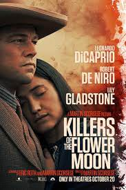

- Anna Burkhart was killed in May, and Grann uses the symbol of the flower-killing moon to represent what happened to the Osage at the hands of whites: like the smaller flowers, their resources are stolen and they die.

- The film is loaded with intense action, from bombs and bullets to martial-arts fighting and hand-to-hand combat. In addition to the hard-hitting action, expect some drinking and a bit of sexuality. And The Joker's nightmarish appearance has the potential to frighten viewers of all ages.

- The film stars Leonardo DiCaprio as a professional thief who steals information by infiltrating the subconscious of his targets. He is offered a chance to have his criminal history erased, as payment for the implantation of another person's idea into a target's subconscious

- Another reason The Batman's plot is great is that it balances action and drama perfectly. While there are plenty of high-octane fight scenes and thrilling action sequences, the story also takes the time to delve into its characters' emotional and psychological struggles.

- John Wick is an American neo-noir action thriller media franchise created by Derek Kolstad and centered on John Wick, a former hitman who is drawn back into the criminal underworld he had previously abandoned.